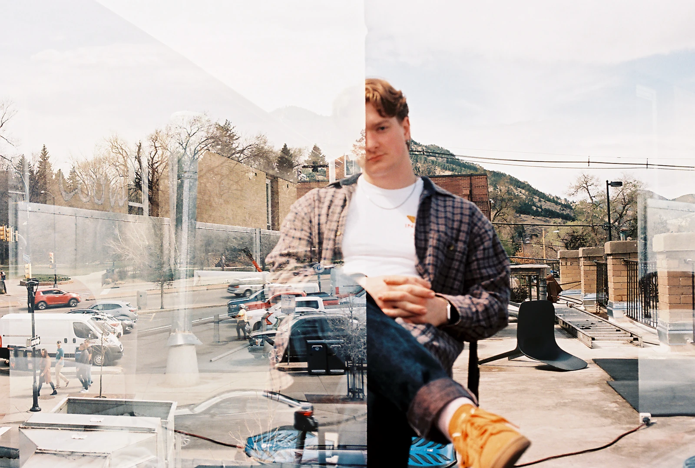

Indian Type Foundry (Indian Type Foundry)
Hi! My name is Bart Baker.
I'm a musician, designer, and engineer that wants to make things that are beautiful and functional.

Growing up in Menlo Park, CA, I've always been driven by curiosity and a love for solving problems. That drive took me to CU Boulder, where I earned degrees in Piano Performance and Creative Technology and Design.
I create experiences that resonate with purpose and precision. As a designer, I blend strategic thinking with creative execution to craft meaningful brand identities and compelling digital experiences. My multidisciplinary background gives me a unique perspective on problem-solving and aesthetic decision-making.
I'm passionate about translating complex ideas into clean, cohesive visual systems that communicate effectively. Whether it's establishing brand guidelines, designing user interfaces, or directing creative projects, I approach each challenge with analytical rigor and artistic intuition.
Interested in working together? Shoot me a .